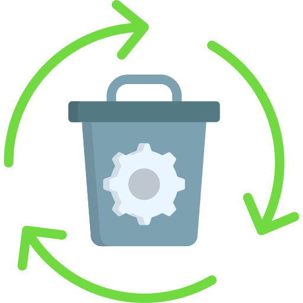
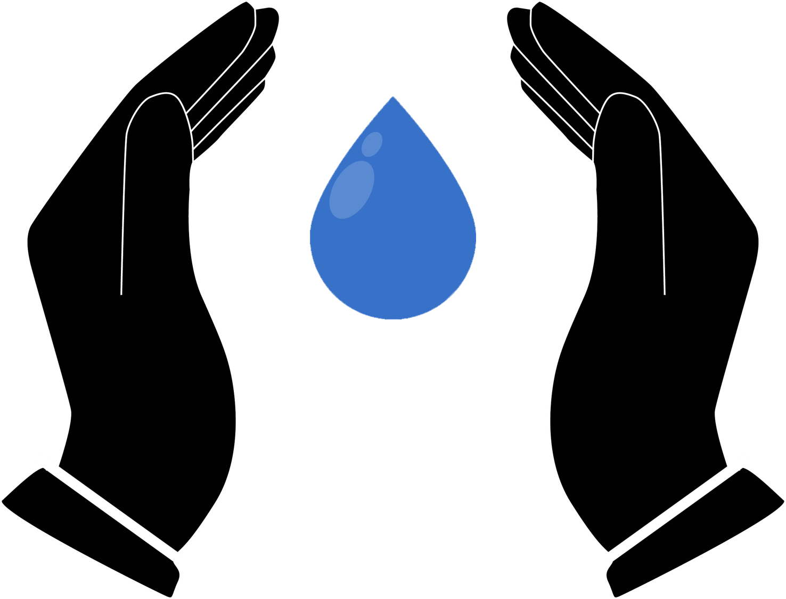
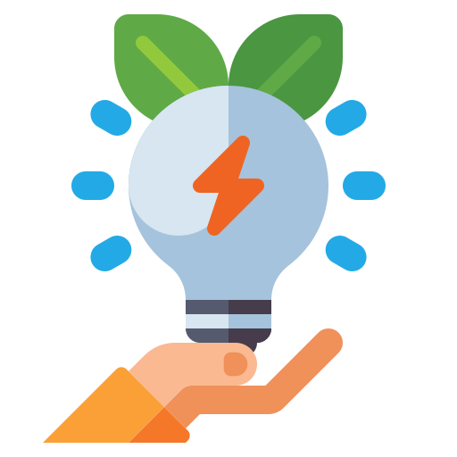
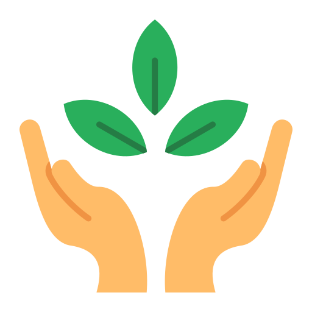
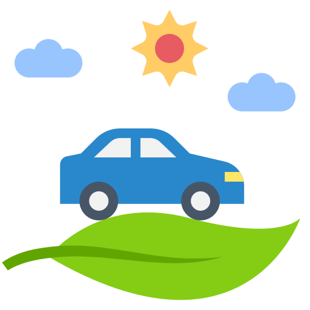
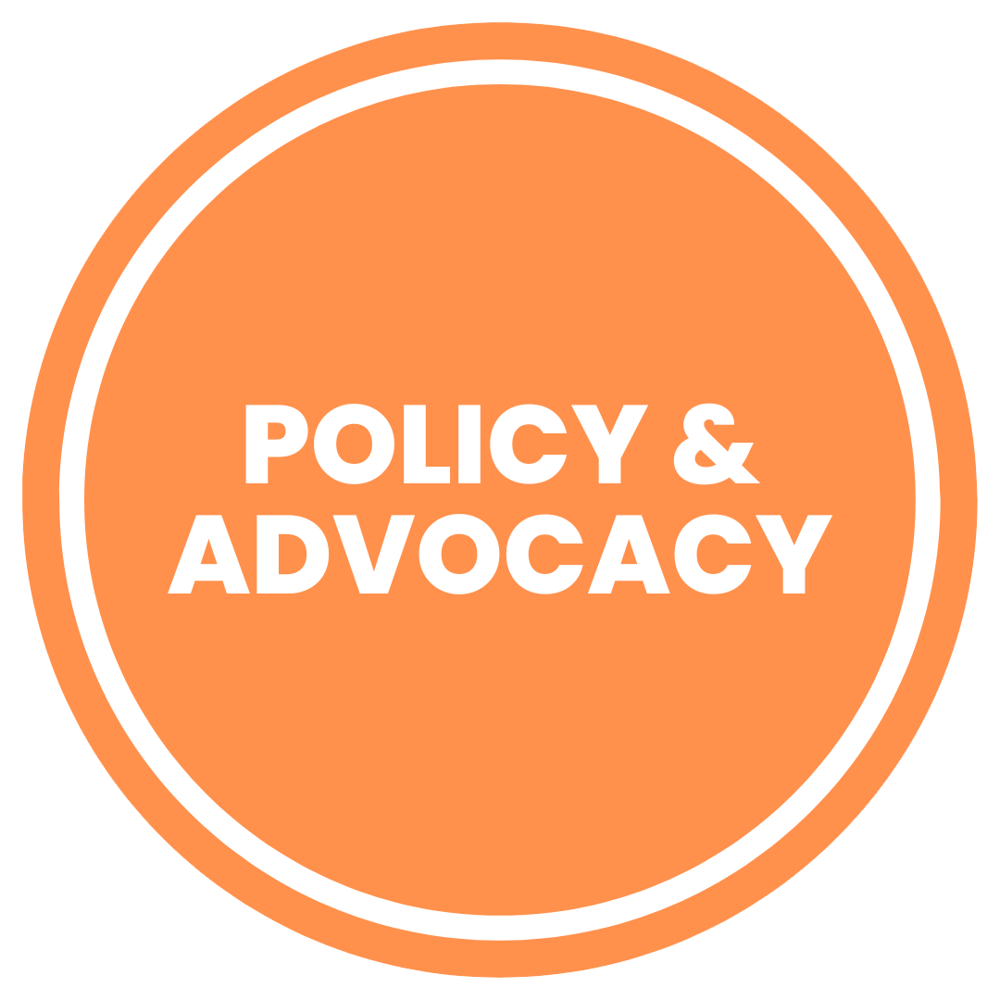
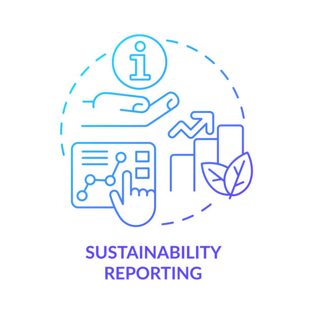

Taking responsibility for conserving our environment is crucial in ensuring a sustainable and healthy planet for current and future generations.
By adhering to a set of rules and practices, individuals can contribute significantly to environmental conservation.

Waste Management
Proper disposal of waste in designated bins.
Recycling and reducing waste whenever possible.
Avoiding littering and participating in community clean-up initiatives.

Water Conservation
Using water efficiently at home and in public spaces.
Reporting and fixing water leaks promptly.
Participating in water conservation campaigns.

Energy Efficiency
Conserving electricity by turning off lights and appliances when not in use.
Using energy-efficient appliances and practices.
Supporting renewable energy initiatives.
Environmental Education
Staying informed about environmental issues and solutions.
Educating others in the community about sustainable practices.
Participating in workshops and awareness campaigns.

Nature Conservation
Respecting and preserving natural habitats.
Avoiding harm to wildlife and ecosystems.
Participating in tree planting and conservation projects.

Sustainable Transportation
Using public transportation, carpooling, or biking.
Supporting and using eco-friendly transportation options.
Reducing personal carbon footprint related to travel.
Community Involvement
Participating in environmental initiatives and events.
Supporting local environmental organizations.
Encouraging neighbors and friends to adopt sustainable practices.

Advocacy and Policy Support
Supporting and advocating for environmental policies.
Participating in public discussions on environmental issues.
Voting for representatives who prioritize environmental sustainability.
Personal Consumption Habits
Choosing sustainable and eco-friendly products.
Reducing single-use plastic consumption.
Supporting businesses with environmentally friendly practices.

Reporting Environmental Issues
Reporting environmental hazards and violations to relevant authorities.
Cooperating with governmental and non-governmental agencies to address environmental concerns.